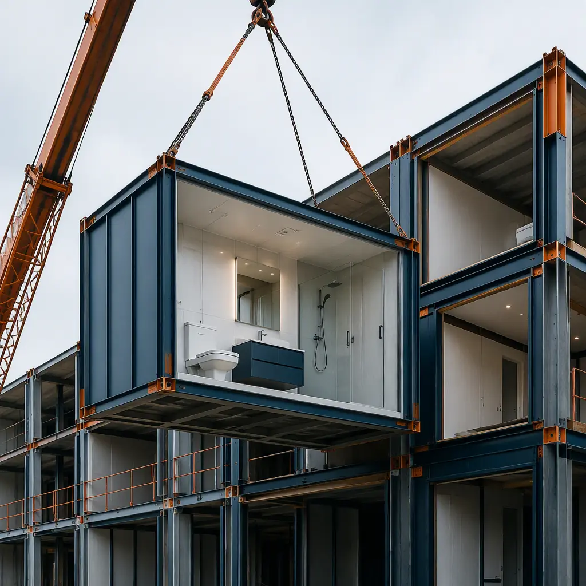
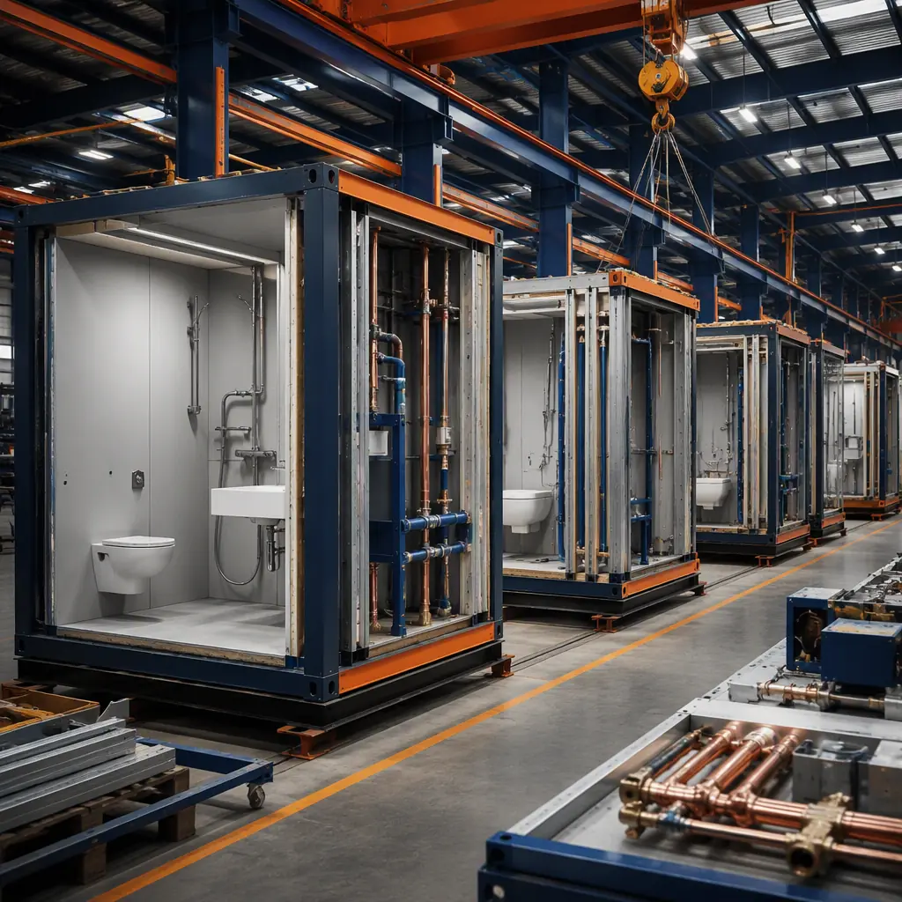
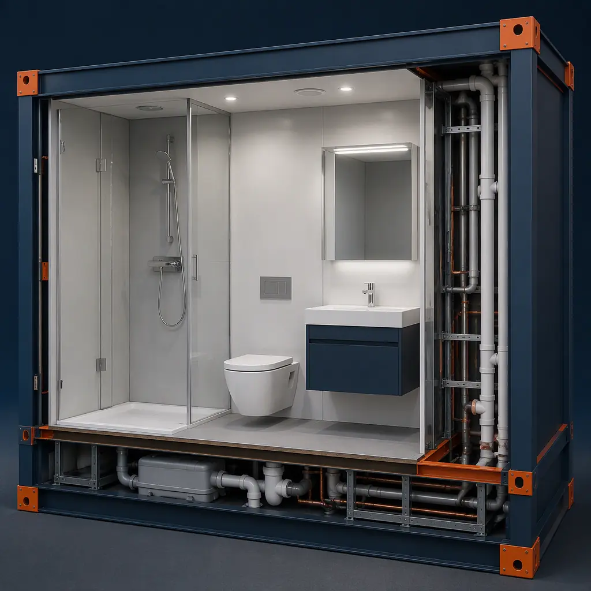

Bathroom construction is the single largest bottleneck in multi-unit building projects. A single hotel bathroom takes 18–25 working days on-site: framing, rough-in plumbing, waterproof membrane application, tiling, fixture installation, and inspections — each step dependent on the previous one finishing. On a 200-room hotel, that's 200 sequential wet room builds, each one a potential leak point, each one holding up the finish schedule. Prefabricated bathroom pods eliminate this bottleneck by moving the entire wet room build into a factory, where all trades work simultaneously under controlled conditions. The result: an 80% reduction in on-site bathroom construction time and a waterproofing guarantee that no site-built bathroom can match.

What Are Prefabricated Bathroom Pods?
A bathroom pod is a complete, factory-built wet room module — a self-contained structural unit that includes all walls, floor, ceiling, waterproofing, plumbing, electrical, mechanical ventilation, tiling, fixtures, and finishes. The pod arrives on site as a finished room. The only on-site work required is crane lifting into position and connecting four service points: hot water, cold water, waste drainage, and electrical supply.
Pod construction follows a fundamentally different logic from site-built bathrooms. In a factory, the pod moves along a production line where each trade works at its dedicated station. A single pod passes through 8–12 stations over 4–6 hours of active production time. The steel frame is welded at station one. Plumbing and electrical rough-in happens at station two — before the walls are closed. Waterproof membrane is applied at station three, flood-tested at station four (every pod, not just a sample), tiling at five, fixtures at six, glass enclosure at seven, and final QA at eight. Each pod undergoes a 24-hour flood test before leaving the factory — a standard impossible to apply to 200 site-built bathrooms.

The On-Site Bottleneck — Why Traditional Bathroom Construction Slows Everything Down
To understand the value of bathroom pods, you need to understand what they replace. A traditional site-built hotel bathroom involves 7–9 different subcontractors working sequentially over 3–4 weeks:
- Week 1: Framing, rough-in plumbing, electrical conduit installation. First inspection.
- Week 2: Drywall (moisture-resistant board), waterproof membrane application. 24-hour cure. Second inspection.
- Week 3: Floor tiling (24-hour cure), wall tiling (another 24-hour cure), grouting. Fixture installation — toilet, sink, shower valve, shower enclosure, mirror, lighting.
- Week 4: Final MEP connections, caulking, snagging, third inspection.
This 4-week sequence creates two enormous problems for developers. First, the critical path: finish schedules cannot advance past the bathrooms until every wet room is complete. Second, quality variability: with 7–9 different subcontractors per bathroom across 200 units, the law of large numbers guarantees waterproofing failures. Industry data shows that 12–18% of site-built bathrooms develop a leak within the first 5 years — each one costing $3,000–$8,000 to remediate (compare with modular construction lifecycle costs).
Cost Comparison — Pods vs Site-Built Bathrooms
The per-unit economics of bathroom pods depend on project scale, but the crossover point is lower than most developers assume:
| Cost Factor | Site-Built | Bathroom Pod | Difference |
|---|---|---|---|
| Materials (per unit) | $3,200–$4,800 | $3,000–$4,200 | 5–12% less |
| Labor (7–9 trades × 3–4 weeks) | $4,500–$6,500 | $1,800–$2,800 | 55–60% less |
| On-Site Duration | 18–25 days | 3–4 days | 80% faster |
| Waterproofing Warranty | 1–2 years typical | 10–15 years | 5–15× longer |
| Defect Rate (5-year) | 12–18% | <1% | Order of magnitude lower |
| Total Per-Unit Cost | $7,700–$11,300 | $7,200–$10,000 | 5–12% savings |
The per-unit cost savings are modest (5–12%), but the real financial impact comes from schedule compression. A 200-room hotel that moves in 12 weeks earlier captures approximately $1.8M–$3.2M in additional room revenue. The schedule compression alone generates 8–15× the per-unit material savings. For a deeper dive into modular construction cost structures, see our 2026 modular construction cost per square foot analysis.
Bathroom pods are the highest-ROI modular component in multi-unit construction. The waterproofing risk reduction alone justifies the investment — and the schedule compression is pure upside.
Types of Bathroom Pods for Different Building Types
Hotel Bathroom Pods
Hotels are the natural application for bathroom pods. A 200-room hotel typically has only 3–5 bathroom layouts, making pod production highly repeatable. Hotel pods are typically 3.5–5 m² and include a shower enclosure (frameless glass), wall-hung toilet, vanity with mirror, and integrated LED lighting. The production line approach means all 200 pods are identical to millimeter tolerances — a QA standard impossible to replicate with 200 site-built bathrooms. For hotel developers considering modular construction for the entire building, see our guide to how modular hotels cut construction time by 40–60%.
Multi-Family and Apartment Pods
Residential bathroom pods are larger (5–8 m²) and typically include a bathtub option, double vanity in master suites, and integrated laundry connections in some layouts. The key advantage for apartment developers is the elimination of multi-trade coordination across potentially hundreds of stacked units. A single factory QC process replaces 200+ individual bathroom inspections. For more on modular apartment development, see our complete developer guide to modular apartment construction.
Healthcare and Accessibility Pods
Healthcare bathroom pods require wider door clearances (900mm minimum), grab bars, wheelchair turning circles (1,500mm diameter), and emergency call systems integrated into the wall assembly. Factory construction ensures these accessibility requirements are met with survey-grade precision rather than relying on site-level interpretation of ADA or DDA standards. For more on modular healthcare construction, see our guide to modular healthcare facilities.

Waterproofing — The Factory Advantage
Waterproofing is where bathroom pods deliver their strongest technical argument. A site-built bathroom's waterproofing depends on a single tradesperson applying a liquid membrane to corners, junctions, and penetrations — the exact locations where 90% of leaks originate. The membrane is applied on-site, in uncontrolled humidity and temperature, often under schedule pressure. Post-application flood testing is done on a sample basis (typically 1 in 10 units) because full testing would delay the schedule.
A bathroom pod's waterproofing follows a fundamentally different process. The membrane is applied in a climate-controlled factory (20–25°C, 40–60% RH) by specialists who do nothing but waterproofing all day. Every single pod undergoes a 24-hour flood test — filled with 50mm of water and checked for any drop in level. The pod does not leave the factory until it passes. This is why pod manufacturers offer 10–15-year waterproofing warranties while site-built bathrooms carry 1–2-year warranties. For projects pursuing sustainability certifications, our guide to modular LEED certification covers how factory QC contributes to green building credits.
MEP Integration — Plumbing, Ventilation, and Electrical
Bathroom pods arrive with all MEP services pre-installed and pre-tested. The plumbing riser is contained within a service cavity in the pod wall, with connections routed to four external points: hot water inlet, cold water inlet, waste outlet (110mm), and electrical supply (single 20A circuit for lighting + extraction fan). On-site connection takes 2–4 hours per pod.
Mechanical ventilation is integrated into the pod ceiling with a ducted extraction fan (typically 50–80 L/s for hotel pods, 90–120 L/s for residential). The fan is pre-wired and pre-ducted to a single connection point on the pod exterior. This eliminates the coordination nightmare of getting seven different HVAC subcontractors to connect seven different bathroom fans correctly — a common source of post-occupancy complaints about humidity and mold. For more on factory quality systems, read our deep dive into modular factory QC and quality assurance.
When Bathroom Pods Make Sense — and When They Don't
Bathroom pods deliver maximum value under specific conditions:
- Projects with 50+ identical or similar bathrooms. Below 50 units, the mold/setup cost for pod production outweighs the per-unit savings.
- Mid-rise and high-rise buildings (4+ stories). The crane is already on site for module installation; adding bathroom pods to the lift schedule costs almost nothing.
- Projects in high-labor-cost markets. The 55–60% labor reduction is most valuable where skilled trades are expensive and scarce.
- Tight urban sites with limited staging area. Pods arrive just-in-time and go straight from truck to crane to position — no on-site material storage or wet trades.
Pods are less advantageous for single-family homes, renovation projects where access prevents crane delivery, and projects with fewer than 30 bathrooms where the production setup cost doesn't amortize. For projects that don't fit the pod model but still want modular speed, see our turnkey modular construction guide.
Logistics — Delivery, Cranage, and Installation Sequence
Bathroom pods weigh 1.2–2.5 tonnes depending on size and finish level. They ship on flatbed trailers (2–4 pods per truck depending on pod dimensions and local road regulations) and are lifted directly into position using the same tower or mobile crane that handles the building modules. Installation sequence is critical: pods are typically placed after the structural modules are set but before corridor finishes, allowing MEP connections to be made from the corridor side through the pod's service access panel.
A 200-room hotel's bathroom pods (200 pods at 4 pods per truck = 50 truckloads) can be delivered and installed in 8–12 working days with a single crane, assuming 8–10 pods per day installation rate. This compares to 3–4 weeks per bathroom for site-built wet rooms — a difference of 200 days of site labor compressed into under 2 weeks of crane time. For more on modular logistics, see our guide to cross-border modular construction logistics.
Evaluating bathroom pods for your next hotel or apartment project? Contact our engineering team for a feasibility assessment, including pod layout options, cost modeling, and delivery scheduling. Free consultations available for projects with 50+ units.